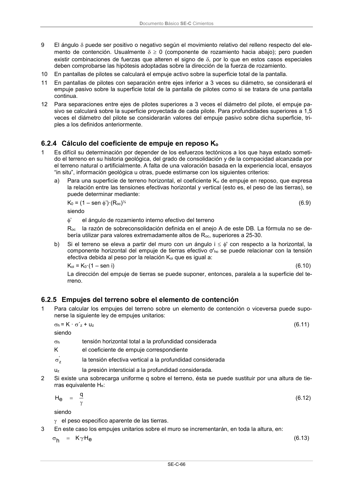
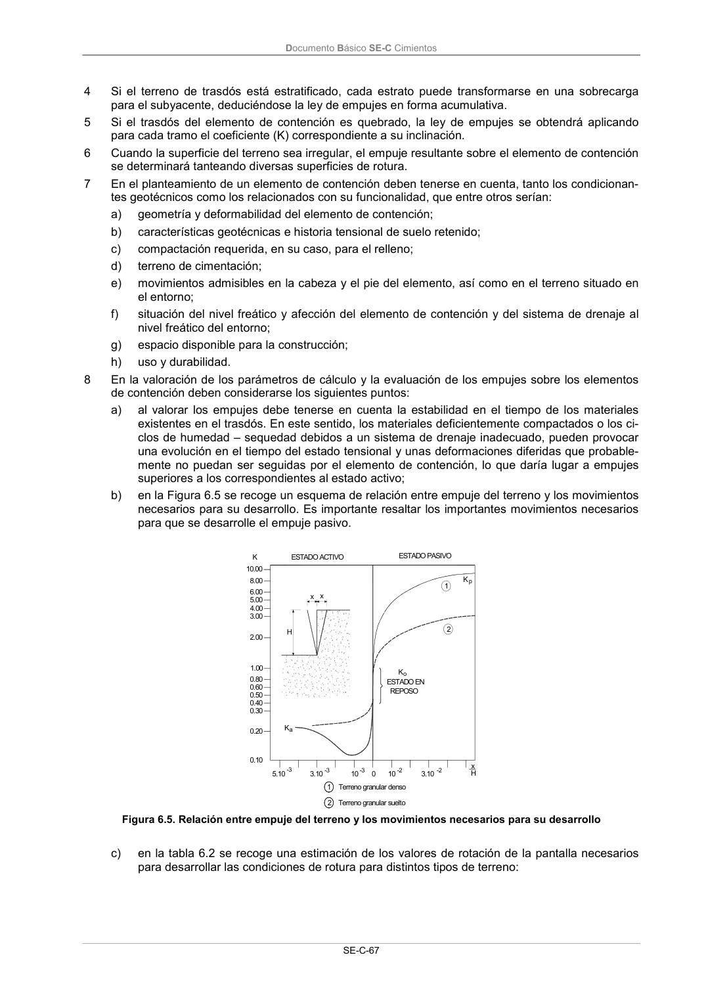
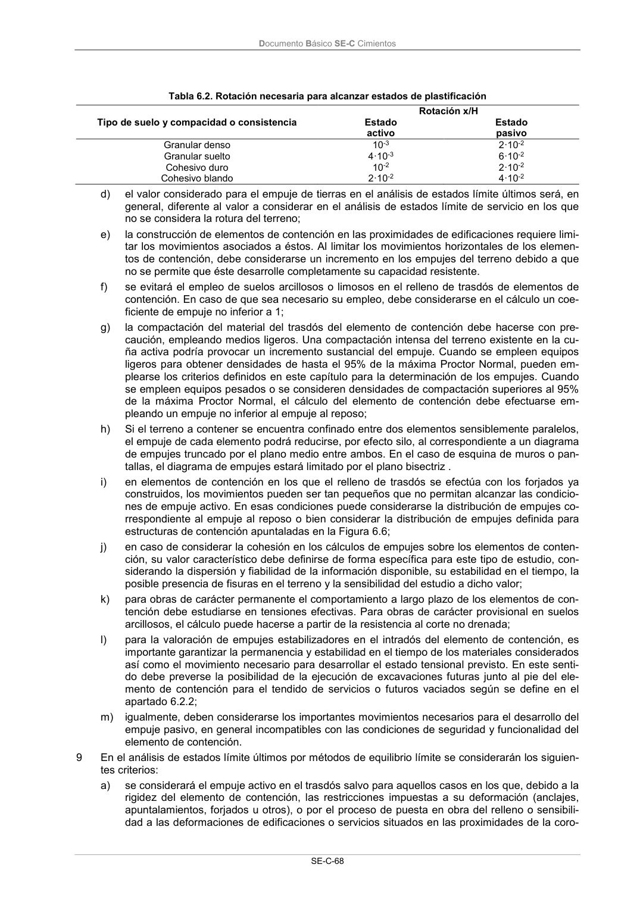
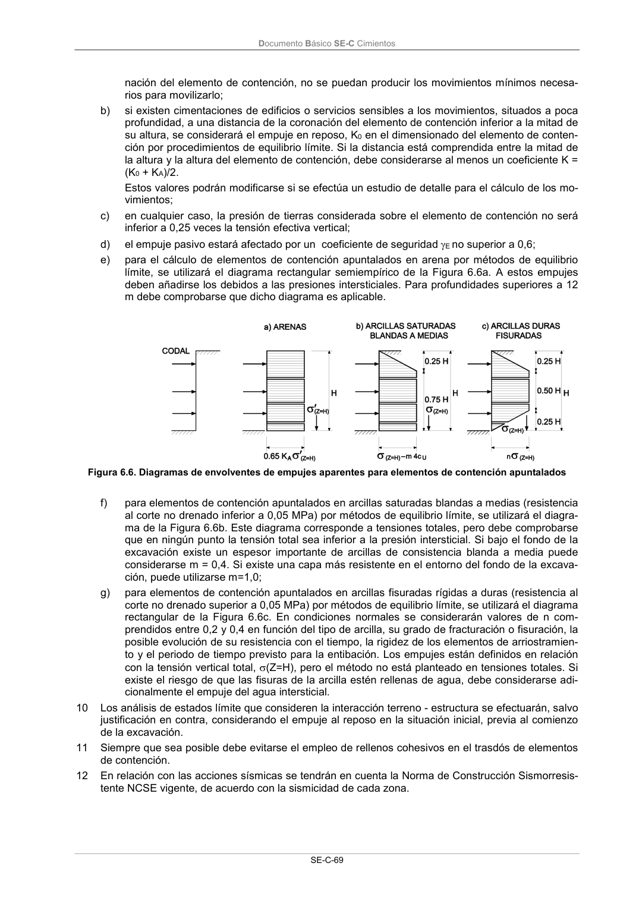

DB-SE-C · 6.2.5 Empujes del terreno sobre el elemento de contención · versión 2019-12-20 · capa oficial
Formatos: JSON compacto · Markdown · PDF fuente
Ámbito del documento · texto del ámbito · documento y tablas
ID técnico a0157 · PDF pág. 71-75 · jerarquía no validada por persona · contrastado con el literal de la página 71 (candidato tipográfico); no validado por persona · padre: raíz
6.2.5 Empujes del terreno sobre el elemento de contención 1 Para calcular los empujes del terreno sobre un elemento de contención o viceversa puede supo- nerse la siguiente ley de empujes unitarios: h = K · ´z + uz (6.11) siendo h tensión horizontal total a la profundidad considerada K el coeficiente de empuje correspondiente ' z la tensión efectiva vertical a la profundidad considerada uz la presión intersticial a la profundidad considerada. 2 Si existe una sobrecarga uniforme q sobre el terreno, ésta se puede sustituir por una altura de tie- rras equivalente He: q e H (6.12) siendo el peso especifico aparente de las tierras. 3 En este caso los empujes unitarios sobre el muro se incrementarán, en toda la altura, en: e H · · K h (6.13) Documento Básico SE-C Cimientos SE-C-67 4 Si el terreno de trasdós está estratificado, cada estrato puede transformarse en una sobrecarga para el subyacente, deduciéndose la ley de empujes en forma acumulativa. 5 Si el trasdós del elemento de contención es quebrado, la ley de empujes se obtendrá aplicando para cada tramo el coeficiente (K) correspondiente a su inclinación. 6 Cuando la superficie del terreno sea irregular, el empuje resultante sobre el elemento de contención se determinará tanteando diversas superficies de rotura. 7 En el planteamiento de un elemento de contención deben tenerse en cuenta, tanto los condicionan- tes geotécnicos como los relacionados con su funcionalidad, que entre otros serían: a) geometría y deformabilidad del elemento de contención; b) características geotécnicas e historia tensional de suelo retenido; c) compactación requerida, en su caso, para el relleno; d) terreno de cimentación; e) movimientos admisibles en la cabeza y el pie del elemento, así como en el terreno situado en el entorno; f) situación del nivel freático y afección del elemento de contención y del sistema de drenaje al nivel freático del entorno; g) espacio disponible para la construcción; h) uso y durabilidad. 8 En la valoración de los parámetros de cálculo y la evaluación de los empujes sobre los elementos de contención deben considerarse los siguientes puntos: a) al valorar los empujes debe tenerse en cuenta la estabilidad en el tiempo de los materiales existentes en el trasdós. En este sentido, los materiales deficientemente compactados o los ci- clos de humedad – sequedad debidos a un sistema de drenaje inadecuado, pueden provocar una evolución en el tiempo del estado tensional y unas deformaciones diferidas que probable- mente no puedan ser seguidas por el elemento de contención, lo que daría lugar a empujes superiores a los correspondientes al estado activo; b) en la Figura 6.5 se recoge un esquema de relación entre empuje del terreno y los movimientos necesarios para su desarrollo. Es importante resaltar los importantes movimientos necesarios para que se desarrolle el empuje pasivo. H x x ESTADO EN REPOSO Ko Kp Ka 10.00 8.00 6.00 5.00 4.00 3.00 2.00 1.00 0.60 0.80 0.50 0.40 0.30 0.20 0.10 5.10-3 3.10-3 10-3 10-2 3.10-2 0 x H 1 2 Terreno granular denso Terreno granular suelto ESTADO PASIVO ESTADO ACTIVO K 1 2 Figura 6.5. Relación entre empuje del terreno y los movimientos necesarios para su desarrollo c) en la tabla 6.2 se recoge una estimación de los valores de rotación de la pantalla necesarios para desarrollar las condiciones de rotura para distintos tipos de terreno: Documento Básico SE-C Cimientos SE-C-68 Tabla 6.2. Rotación necesaria para alcanzar estados de plastificación Tipo de suelo y compacidad o consistencia Rotación x/H Estado activo Estado pasivo Granular denso 10-3 2·10-2 Granular suelto 4·10-3 6·10-2 Cohesivo duro 10-2 2·10-2 Cohesivo blando 2·10-2 4·10-2 d) el valor considerado para el empuje de tierras en el análisis de estados límite últimos será, en general, diferente al valor a considerar en el análisis de estados límite de servicio en los que no se considera la rotura del terreno; e) la construcción de elementos de contención en las proximidades de edificaciones requiere limi- tar los movimientos asociados a éstos. Al limitar los movimientos horizontales de los elemen- tos de contención, debe considerarse un incremento en los empujes del terreno debido a que no se permite que éste desarrolle completamente su capacidad resistente. f) se evitará el empleo de suelos arcillosos o limosos en el relleno de trasdós de elementos de contención. En caso de que sea necesario su empleo, debe considerarse en el cálculo un coe- ficiente de empuje no inferior a 1; g) la compactación del material del trasdós del elemento de contención debe hacerse con pre- caución, empleando medios ligeros. Una compactación intensa del terreno existente en la cu- ña activa podría provocar un incremento sustancial del empuje. Cuando se empleen equipos ligeros para obtener densidades de hasta el 95% de la máxima Proctor Normal, pueden em- plearse los criterios definidos en este capítulo para la determinación de los empujes. Cuando se empleen equipos pesados o se consideren densidades de compactación superiores al 95% de la máxima Proctor Normal, el cálculo del elemento de contención debe efectuarse em- pleando un empuje no inferior al empuje al reposo; h) Si el terreno a contener se encuentra confinado entre dos elementos sensiblemente paralelos, el empuje de cada elemento podrá reducirse, por efecto silo, al correspondiente a un diagrama de empujes truncado por el plano medio entre ambos. En el caso de esquina de muros o pan- tallas, el diagrama de empujes estará limitado por el plano bisectriz . i) en elementos de contención en los que el relleno de trasdós se efectúa con los forjados ya construidos, los movimientos pueden ser tan pequeños que no permitan alcanzar las condicio- nes de empuje activo. En esas condiciones puede considerarse la distribución de empujes co- rrespondiente al empuje al reposo o bien considerar la distribución de empujes definida para estructuras de contención apuntaladas en la Figura 6.6; j) en caso de considerar la cohesión en los cálculos de empujes sobre los elementos de conten- ción, su valor característico debe definirse de forma específica para este tipo de estudio, con- siderando la dispersión y fiabilidad de la información disponible, su estabilidad en el tiempo, la posible presencia de fisuras en el terreno y la sensibilidad del estudio a dicho valor; k) para obras de carácter permanente el comportamiento a largo plazo de los elementos de con- tención debe estudiarse en tensiones efectivas. Para obras de carácter provisional en suelos arcillosos, el cálculo puede hacerse a partir de la resistencia al corte no drenada; l) para la valoración de empujes estabilizadores en el intradós del elemento de contención, es importante garantizar la permanencia y estabilidad en el tiempo de los materiales considerados así como el movimiento necesario para desarrollar el estado tensional previsto. En este senti- do debe preverse la posibilidad de la ejecución de excavaciones futuras junto al pie del ele- mento de contención para el tendido de servicios o futuros vaciados según se define en el apartado 6.2.2; m) igualmente, deben considerarse los importantes movimientos necesarios para el desarrollo del empuje pasivo, en general incompatibles con las condiciones de seguridad y funcionalidad del elemento de contención. 9 En el análisis de estados límite últimos por métodos de equilibrio límite se considerarán los siguien- tes criterios: a) se considerará el empuje activo en el trasdós salvo para aquellos casos en los que, debido a la rigidez del elemento de contención, las restricciones impuestas a su deformación (anclajes, apuntalamientos, forjados u otros), o por el proceso de puesta en obra del relleno o sensibili- dad a las deformaciones de edificaciones o servicios situados en las proximidades de la coro- Documento Básico SE-C Cimientos SE-C-69 nación del elemento de contención, no se puedan producir los movimientos mínimos necesa- rios para movilizarlo; b) si existen cimentaciones de edificios o servicios sensibles a los movimientos, situados a poca profundidad, a una distancia de la coronación del elemento de contención inferior a la mitad de su altura, se considerará el empuje en reposo, K0 en el dimensionado del elemento de conten- ción por procedimientos de equilibrio límite. Si la distancia está comprendida entre la mitad de la altura y la altura del elemento de contención, debe considerarse al menos un coeficiente K = (K0 + KA)/2. Estos valores podrán modificarse si se efectúa un estudio de detalle para el cálculo de los mo- vimientos; c) en cualquier caso, la presión de tierras considerada sobre el elemento de contención no será inferior a 0,25 veces la tensión efectiva vertical; d) el empuje pasivo estará afectado por un coeficiente de seguridad E no superior a 0,6; e) para el cálculo de elementos de contención apuntalados en arena por métodos de equilibrio límite, se utilizará el diagrama rectangular semiempírico de la Figura 6.6a. A estos empujes deben añadirse los debidos a las presiones intersticiales. Para profundidades superiores a 12 m debe comprobarse que dicho diagrama es aplicable. Figura 6.6. Diagramas de envolventes de empujes aparentes para elementos de contención apuntalados f) para elementos de contención apuntalados en arcillas saturadas blandas a medias (resistencia al corte no drenado inferior a 0,05 MPa) por métodos de equilibrio límite, se utilizará el diagra- ma de la Figura 6.6b. Este diagrama corresponde a tensiones totales, pero debe comprobarse que en ningún punto la tensión total sea inferior a la presión intersticial. Si bajo el fondo de la excavación existe un espesor importante de arcillas de consistencia blanda a media puede considerarse m = 0,4. Si existe una capa más resistente en el entorno del fondo de la excava- ción, puede utilizarse m=1,0; g) para elementos de contención apuntalados en arcillas fisuradas rígidas a duras (resistencia al corte no drenado superior a 0,05 MPa) por métodos de equilibrio límite, se utilizará el diagrama rectangular de la Figura 6.6c. En condiciones normales se considerarán valores de n com- prendidos entre 0,2 y 0,4 en función del tipo de arcilla, su grado de fracturación o fisuración, la posible evolución de su resistencia con el tiempo, la rigidez de los elementos de arriostramien- to y el periodo de tiempo previsto para la entibación. Los empujes están definidos en relación con la tensión vertical total, (Z=H), pero el método no está planteado en tensiones totales. Si existe el riesgo de que las fisuras de la arcilla estén rellenas de agua, debe considerarse adi- cionalmente el empuje del agua intersticial. 10 Los análisis de estados límite que consideren la interacción terreno - estructura se efectuarán, salvo justificación en contra, considerando el empuje al reposo en la situación inicial, previa al comienzo de la excavación. 11 Siempre que sea posible debe evitarse el empleo de rellenos cohesivos en el trasdós de elementos de contención. 12 En relación con las acciones sísmicas se tendrán en cuenta la Norma de Construcción Sismorresis- tente NCSE vigente, de acuerdo con la sismicidad de cada zona. Documento Básico SE-C Cimientos SE-C-70




PDF fuente redistribuible: copia fiel enlazada en esta página (SHA256 verificado).